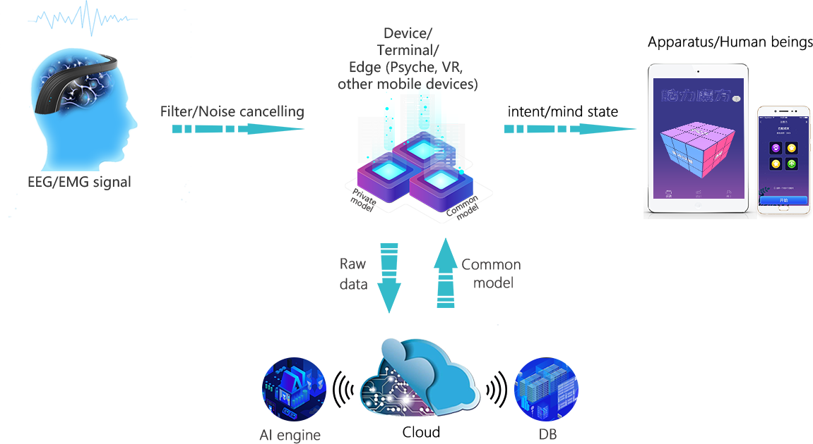

How do humans perceive the outside world?
The interaction between humans and the outside world is essentially multimodal. We use multiple sensory organs in sequence or in parallel to explore the environment around us, so that we can perceive new information and deepen our understanding of the world. We feel external stimuli through sight, hearing, touch, smell and taste, and feel our own inner state through Proprioception.
Proprioception is generally produced by mechanical stimuli located in joints, muscles, tendons, and skin. The proprioception is not only the peripheral sensory nerve input, but also the output mechanism of the central nervous system motor nerve command. It distributes ligaments, joint capsules, tendons, muscles, skin, articular cartilage, and other proprioceptors of the intra-articular structures and free nerve endings in different parts of the body to produce certain nerve impulses. Through the proprioceptive conduction pathway to the central nervous system, after analysis and integration, there will be a sense of body and limb movement and its location.
The five senses of human beings: visual, auditory, tactile, olfactory, and taste, are essentially the electromagnetic force and the gravitational sensibility of gravitation. Vision: is a photoreceptor, light is electromagnetic waves, it’s based on electromagnetic force. Hearing: is a vibration sensor based on electromagnetic force. Taste and Smell: chemoreceptor, the nature of chemical reactions is the exchange of electrons, so it is also based on electromagnetic force. Tactile: intermolecular acting force receptors, they are electromagnetic forces that are not offset. [Strong Interaction Force] and [Weak Interaction Force], we don’t have organs that can directly feel them, but we can observe [the particles that participate in both electromagnetic force and these two forces] to understand them, for example, protons. Dark matter does not participate in electromagnetic force, and any sense organs and instrument based on electromagnetic force cannot directly detect it, but we can understand them based on the gravitational effects of ordinary stars and dark matter that you can see. Therefore, the brain with consciousness and logical reasoning is the "sixth sense" to expand the existing senses.
Consciousness is the response of the brain of a advanced life to the objective world. Imagination, Wisdom, Thinking, Perception, and Feeling are all manifestations of consciousness. Consciousness is the product of the brain. Contemporary research shows that the brain is made up of 100 billion nerve cells. The individual cells themselves are not smart. The brain can produce consciousness, which is on account of the perfect structure of nerves and the cooperation of hundreds of millions cells.
Take th devices we manufacture, in addition to the biological and natural interactions that already exist (or exist in the imagination). Unlike the interaction with other creatures, the core of human interaction with computers is logic. Up to now, people have tried to translate natural language into a machine language that can be processed and executed by machines, allowing machines to help people further explore the mysteries of the world. Whether in distant outer space, in a deep ocean, or in the minds of others, machines can help us enter the ocean of knowledge that human is hard to reach.
How does humanity interact with the outside world?
Human beings can use a variety of methods to convey information in social life. In addition to language, seemingly redundant channels of expressions, movements, eyes, and gestures carry most of the information in human communication. Multimodal perception provides us with a wealth of information to support interactions between people and between people and the outside world.
So far, the way humans interact with the outside world has always been through the body's epitaxial organs. Regardless of the arm, leg, nose, mouth, etc., these epitaxial organs respond to various actions to control their behavioral actions, consciousness, etc. after receiving the control signals of the central nervous system. Essentially, these organs are also a device, except that they receive bioelectrical signals.
Nowadays, in addition to the biological and natural interactions that already exist (or exist in the imagination). Unlike the interaction with other creatures, the core of human interaction with computers is logic. Up to now, people have tried to translate natural language into a machine language that can be processed and executed by machines, allowing machines to help people further explore the mysteries of the world. Whether in distant outer space, in a deep ocean, or in the minds of others, machines can help us enter the ocean of knowledge that human is hard to reach.
-
Language
-
Gesture
-
Computer
-
Artificial intelligence
How does Neural FLEX change this traditional way of interaction?
In marked contrast to the traditional way of interacting with the world, Human-Computer Interaction (HCI) is a two-way exchange of symbols and actions between people and computers——It still relies mainly on single-modal communication, it means that information is transmitted between a person and a computer mainly through a single channel such as a keyboard, a mouse, and a graphic display. What Neural FLEX does is to remove the intermediate links of these single channels, remove the media such as limbs and computer input, and make human directly interact with the machine.
Human-computer Interaction——the principle of brain-computer interface technology
Brain-Computer Interface (BCI) refers to a connection or path between the brain and a computer or external device. It collects brain signals, then classifies them to generate external device commands, and feeds the corresponding information from the external device to the brain, thereby achieving "brain-computer interaction."
"Brain" means the brain or nervous system of organic life forms, not just "mind" (abstract mind).
"Machine" means any device that is processed or calculated, its forms can range from simple circuits to silicon chips to external devices and wheelchairs.
"Interface" = “Mediator for Information Exchange”。
The definition of "Brain-Computer Interface"= "Brain"+"Computer"+"Interface".
Brain-Computer Interface is an application technology developed on the basis of cognitive neuroscience brain function imaging technology in recent years. The core disciplines include Cognitive Science, Neural Engineering, and Neuroscience. It converts brain signals into a computer-recognized signals by acquiring and preprocessing them, through the feature extraction of information, feature classification and other algorithms, and then converted into instructions to control external devices, to achieve a certain degree of interpretation of the purpose of simple thinking. This technique of expressing ideas or manipulating devices directly through brain thinking activities without any language or action, it can establish a direct communication between the human brain and a computer or other devices for patients with severe neurological or muscular disorders.

So far, human research on Brain-Computer Interface has been going on for more than 40 years. Since the mid-1990s, the relevant knowledge gained from experiments has grown significantly. Based on the practice of animal experiments for many years, early implant devices for the human body have been designed and manufactured to restore the auditory, visual and limb motor capabilities of injury. The video below shows us this technology more clearly.
The prospects and benefits of human-computer interaction
With the rapid development of high-speed processing chips, Internet and multimedia, Human-Computer Interaction (HCI) has experienced four major stages: the era of Gas-Electric Mechanical Control, the era of Electronic Graphic Image Design, the era of Internet Interconnection, and the era of Intelligent Interaction of New Media. In the turn of the century, the research focus of Human-Computer Interaction has gradually shifted from intelligent interaction, new media interaction, and augmented reality such fields of human-computer interaction, which have strengthened the human-centered interaction research. However, the brain-computer interface technology focuses on the digital processing of human consciousness and thinking, and fundamentally revolutionizes the way people interact with the world.
The current commercialization of brain-computer interface includes Medical Health: The medical field is mainly divided into two directions, namely, “enhancement” and “recovery”. Both directions have extremely ambitious “money scenes”, especially the direction of reinforcement. At this stage, the recovery class is the main one because it is easier to implement. The "enhancement" direction mainly refers to the implantation of chips into the brain to enhance memory and promote the direct connection between the human brain and computing devices. This is called "Human Enhancement(HE)" . The “recovery” direction mainly refers to the corresponding recovery training for ADHD, stroke, epilepsy and other diseases. The main method adopted is neurofeedback training.
Education Technology ：This direction is actually somewhat close to the “recovery” direction in the medical direction. Education technology is a billion-dollar market, mainly to detect students' attention value in real time, so as to help teachers understand the classroom situation and change teaching methods. Market development in this field is currently mainly at the B-end.
Smart Home ：Smart Home is a big imagination space that combines Brain-Computer Interface with IoT (Internet of Things). In this field, the Brain-Computer Interface plays a role similar to the “remote control”, which helps people to control the switch lights, switch doors, switch curtains, etc., go a step further, it can control the home service robot.
VR ： At present, the interactive experience of VR/AR needs to be improved. The current solution is through speech recognition and gesture recognition. However, if you use the Brain-Computer Interface, you can control the menu navigation and option control of the VR interface by your mind. It will greatly improve the use experience.
For the moment, mainstream consumer Brain-Computer Interface research mainly uses non-invasive EEG technology. Although relatively invasive technology is easy to implement, the cost is still too high. However, with the influx of talents and capital, non-invasive EEG technology is bound to be miniaturized, portable, wearable and easy to use.
For invasive technology, if the human body's rejection reaction and the transmission of information from the skull will be degraded in the future, the computer will accurately recognize the human mind's thinking in real time. This aspect will help the computer to better understand the characteristics of human brain activities to guide the computer to better imitate the human brain; on the other hand, it can make the computer works better with people.
Brain-computer Interface technology is a new subject that has developed rapidly in recent years, and there are bound to be many problems. However, with the continuous deepening of BCI research, it will gradually show a greater application prospect.